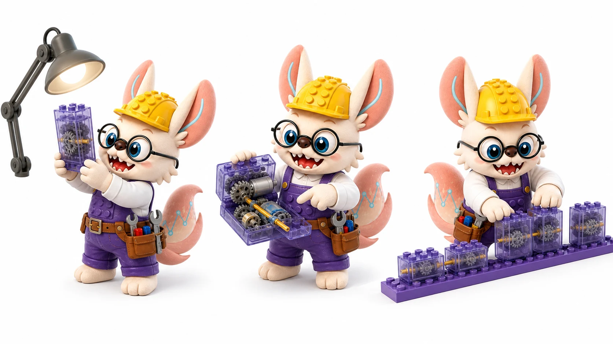
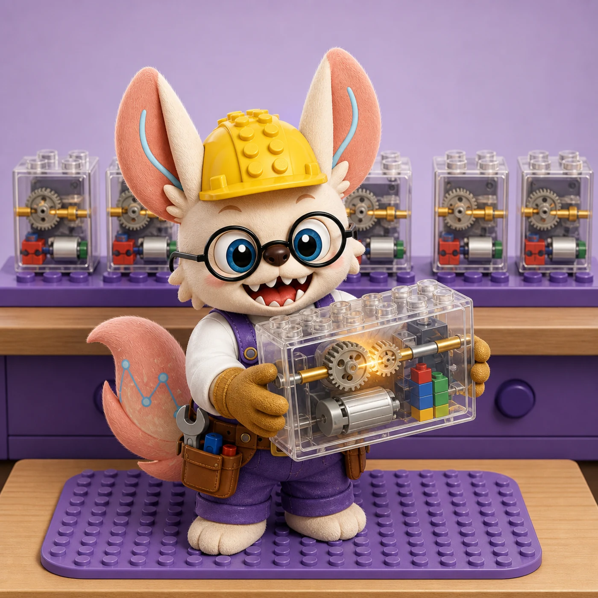
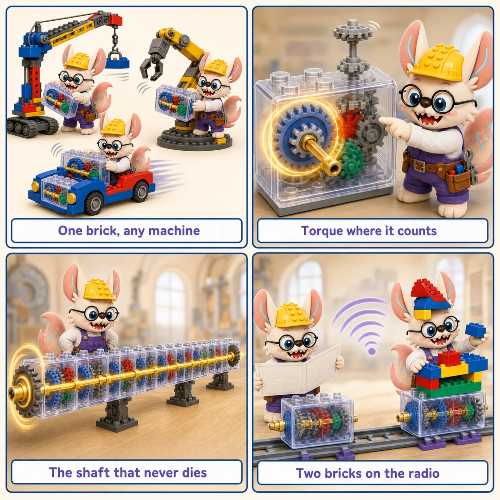

From the original Attention Is All You Need to the zoo of encoder, decoder, and hybrid designs powering
single-cell, genomic, and protein foundation models — the blueprint behind the biology.
5
Core Architectures
20+
Biology Models
4
Biological Domains
2017–2026
Year Range

LEGO lens · transformer architecture
一块标准动力砖，叠出任意深的机器。
Every LEGO machine that moves runs on the same sealed power brick. 给它图纸它能读（encoder），给它半成品它能接着拼（decoder），两组对讲一联动就是整条装配线——transformer 的全部型号，都是这一块砖的不同排布。

🧱 The Power Brick: Transformer Architecture in Six Parts
「一块标准动力砖，叠出任意深的机器。」
Open any motorized LEGO set and you find the same sealed power brick: gearbox, motor, driveshaft, regulator. Transformer architecture is that brick for sequence models — one standard module, wired in different ways to become encoders, decoders, and full encoder–decoder lines. Six parts from the datasheet, re-read as architecture.
Part 1 · 标准动力砖 The sealed power brick
The transformer block
The genius is not any single part — it is that the whole brick is sealed and standard. Snap one into a crane, snap ten into a factory line: same brick, any machine.
The block. Self-attention + FFN + residuals + norms, packaged as one reusable module. Stacked N times, it scales from a toy to a factory. See the block ↓
Part 2 · 变速箱分动力 The gearbox
Self-attention
Inside the brick, the gearbox decides which gears bite how hard: the tower gear needs torque now, the decorative antenna can wait. Every rotation is re-routed on the fly.
Attention. Each position re-weights how much it listens to every other position — torque allocation, recomputed per token. See attention ↓
Part 3 · 直通传动轴 The direct driveshaft
Residual connections
Deep in a long machine, power dies gear by gear. The brick carries a straight shaft that bypasses the gearbox entirely — full torque, delivered untouched to the far end.
Residuals. x + F(x): the input flows through unmodified, so gradients and signals survive a hundred layers without stalling. See why deep works ↓
Part 4 · 稳压器 The voltage regulator
Layer normalization
Stack fifty bricks and small voltage wobbles compound into brownouts. The regulator at each brick's output clamps the power to spec — every stage, every time.
LayerNorm. Each sublayer's output is re-standardized, keeping deep stacks stable and trainable. See normalization ↓
Part 5 · 轨道上的编号螺柱 Numbered studs on the rail
Positional encoding
The power brick itself is order-blind — it treats a row of gears as a bag. The rail underneath carries numbered studs, so position one and position nine are never confused.
Position. Self-attention has no sense of order; positions are injected (sinusoids, learned, or rotary), so "gene A before gene B" means something. See position ↓
Part 6 · 两组动力组对讲 Two bricks on the radio
Encoder–decoder
One brick reads the blueprint and radios a summary; the other builds, asking questions as it goes. The radio link between them is the whole assembly line.
Cross-attention. The encoder compresses the input sequence; the decoder generates while querying it. Encoder-only (BERT-style) reads; decoder-only (GPT-style) builds. See the variants ↓

The power brick in four plays. One brick, any machine (the standard module) · torque where it counts (self-attention) · the shaft that never dies (residual connections) · two bricks on the radio (encoder–decoder).
「图纸能读，半成品能续——一块砖的全部排布，就是 transformer 的全部型号。」
The Blueprint Story
Why architecture matters as much as the training objective
You can have the perfect tokenization strategy and the right pretraining objective, but if the
architecture routes information incorrectly, the model cannot learn what you need it to learn.
The architecture decides three things: which tokens can see which other tokens
(attention mask), how information is transformed at each layer (the transformer
block), and what positional information the model receives about token order
or biological coordinates.
In biology, this translates to concrete design choices: an encoder-only model sees the whole gene
expression profile at once (good for classification), a decoder generates one gene at a time
(good for simulation), and an encoder-decoder translates one biological state to another
(perturbation prediction, cross-species transfer). Getting this choice wrong is not a minor
performance hit — it changes what the model can and cannot represent.
📖 Encoder-Only
Bidirectional context. Best for understanding / representation. Geneformer, DNABERT-2, ESM2.
✏ Decoder-Only
Causal / autoregressive. Best for generation & simulation. TranscriptFormer, scGPT.
⇄ Encoder-Decoder
Source → Target. Best for seq-to-seq translation. T5, some perturbation models.
🌀 SSM / Hybrid
Sub-quadratic. Best for very long genomic sequences. Mamba, Hyena, Evo 2.
Every transformer in biology — from BERT to GPT to AlphaFold2 — is built by stacking this same module
repeatedly (6×, 12×, 24× ...). The block has two sub-layers: Multi-Head Attention (which lets tokens
talk to each other) and a Feed-Forward Network (which transforms each token independently). Both are
wrapped with Layer Normalization and a residual connection that adds the
input directly to the sub-layer output. The residual is what allows very deep networks to train stably.
LEGO analogy: Think of the transformer block as a universal LEGO adapter brick.
Every LEGO creation uses the same adapter regardless of what it's building — a spaceship or a castle.
The MHA is the part that checks how each brick connects to every other brick in the build; the FFN is
the part that reshapes each individual brick. The residual is the guarantee that you can always
snap the original brick back on if the reshaping goes wrong.
Variant
What changes
When to use
Bio example
Post-LN (original)
LayerNorm after residual add
Original BERT/GPT; needs careful LR warmup
Original Transformer (Vaswani 2017)
Pre-LN
LayerNorm before each sub-layer
More stable training; default in modern models
Geneformer, scGPT, most 2022+ models
Parallel FFN+Attn
FFN and MHA run simultaneously
Faster training at scale; ~15% throughput gain
GPT-J, some large protein models
SwiGLU FFN
Gated linear unit replaces ReLU
Better representation learning per param
LLaMA, ESM3, many 2024+ FMs
2
Encoder-Only Architecture
Bidirectional self-attention — every token sees every other token
In an encoder-only model, every token can attend to every other token in both directions —
past and future. The output is a dense representation of each input token that encodes its
meaning in context of the whole sequence. This is ideal whenever the task requires
understanding a complete biological entity: classifying a cell type, scoring a gene's regulatory
importance, or embedding a protein for downstream search.
LEGO analogy: A LEGO expert who lays out all the bricks on a table and
examines every brick in the context of every other brick simultaneously — before deciding what anything
means. Gene A's representation knows about Gene E because the expert could see them both at the same time.
Causal self-attention — each token sees only tokens to its left
A decoder-only model applies a causal mask: token at position i can only
attend to positions 1 … i, never to future positions. This makes the model naturally
autoregressive — it can generate sequences token by token. For single-cell biology, "generating"
means sampling a plausible gene expression profile one gene at a time, or predicting what happens
next in a developmental trajectory. Confusingly, scGPT uses a decoder-only architecture despite
its "GPT" name primarily being used for masked pretraining — check the attention mask, not the name.
LEGO analogy: A LEGO builder who is assembling a set step by step, cover page closed.
At step 5, they know what steps 1–4 looked like, but not step 6. They must predict the next brick
from what they've placed so far — exactly how a language model generates the next token.
Model
Biological token
Generation task
Notes
scGPT
Gene name + expression bin
Cell generation, perturbation
Uses condition tokens; despite name, some tasks use bidirectional pretraining
Source → Encoded context → Target — cross-attention bridges the two
The encoder-decoder architecture (T5 / BART family) separates two concerns: the encoder reads and
summarizes the source sequence with full bidirectional attention; the decoder generates
the target sequence token-by-token while additionally attending to the encoder's outputs
via cross-attention. This is the natural structure for translation tasks in biology:
translating a control cell state to a perturbed state, translating a DNA sequence to its protein,
or translating a human gene to its mouse ortholog.
LEGO analogy: A LEGO instruction-translator: one expert reads a French instruction
set (encoder — full bidirectional context over the source), then a second expert builds the English
equivalent one step at a time (decoder — causal generation), periodically glancing at the French
expert's summary notes (cross-attention) to stay aligned with the source meaning.
Model
Source
Target
Cross-attention role
T5 / Flan-T5
Corrupted text
Original text
Decoder queries encoder span representations
Enformer (hybrid)
DNA sequence (200kb)
Regulatory track values
Transformer encoder for sequence, prediction head for targets
scELMo (concept)
Control cell profile
Perturbed cell profile
Causal perturbation-conditioned decoding
AlphaFold2 (partial)
MSA + pair features
3D coordinates
Evoformer encodes; structure module decodes into 3D
5
Positional Encoding
How the model knows "where" each token is — or whether order matters at all
Attention itself is permutation-invariant — shuffle the tokens and the attention
scores change but the mechanism doesn't know they were shuffled. Positional encoding injects
order information. In DNA, position matters enormously (base 500 and base 5000 have different
regulatory contexts). In scRNA-seq, gene order is largely arbitrary — what matters
is the set of expressed genes and their relative levels — so many single-cell models
deliberately omit positional encoding or use gene-rank-based alternatives.
LEGO analogy: Positional encoding is the slot number printed on each
LEGO baseplate. For DNA, the slot number (genomic coordinate) is critical — brick 1000 connects
to brick 1001, not brick 5000. For gene expression, the "slot" is arbitrary — it doesn't matter
whether Gene A is the first or the fifth column in the expression matrix; what matters is its value
relative to the other genes.
Strategy
How it works
Extrapolates?
Best for
Sinusoidal
Fixed sin/cos at each position; added to embeddings
No
Text; original transformer
Learned absolute
Trainable position embedding table
No
BERT (≤512 tokens)
RoPE
Rotate Q,K by position-dependent angle; encodes relative distance in attention score
Partial (NTK scaling)
LLMs, genomic FMs, long sequences
ALiBi
Add linear bias −m·|i−j| to attention score; no learned params
Yes
Long sequences; BLOOMZ, some DNA models
None (set-based)
No position signal; model treats input as unordered set
Gene modules, regulatory motifs, secondary structure elements
Late layers (8+)
Task-relevant, global context
Cell type identity, pathway activation states, 3D protein contacts
Practical Architecture Selection Guide
1
Define your biological question first
Is the task about understanding (classifying, scoring, representing) or generating (simulating, designing, predicting a new sequence)? Understanding → encoder-only. Generating → decoder-only. Both → encoder-decoder or decoder with conditioning.
2
Does biological order matter for your tokens?
DNA/protein sequences: yes, use positional encoding (RoPE for long sequences). scRNA gene sets: usually no, omit or use gene-rank encoding. Single cells in a population: no — treat as a set (State, STACK model).
3
Check sequence length against O(n²) budget
If your input exceeds ~4,000–8,000 tokens, pure attention becomes expensive. Options: sliding window attention (Longformer style), linear attention (Performer / scBERT), or switch to SSM (HyenaDNA, Evo 2) for very long genomic sequences (>50kb).
4
Choose a pretrained model before training from scratch
For scRNA: start from Geneformer or scGPT. For DNA: DNABERT-2 (<1kb) or Nucleotide Transformer (multi-species). For protein: ESM2 (structure) or ESM3 (multimodal). Training from scratch requires tens of millions of samples and weeks of GPU time — almost always unnecessary for biology.
5
Use the minimal architecture that solves the task
A 6-layer encoder is often sufficient for cell type annotation. A 24-layer decoder is overkill for a 5-class classification task. Larger models require more data to avoid overfitting; smaller fine-tuned models often outperform larger frozen ones on small biological datasets.
Hands-On Resources
Illustrated Transformer
Jay Alammar's visual walkthrough of the encoder-decoder architecture — start here for the block diagram.